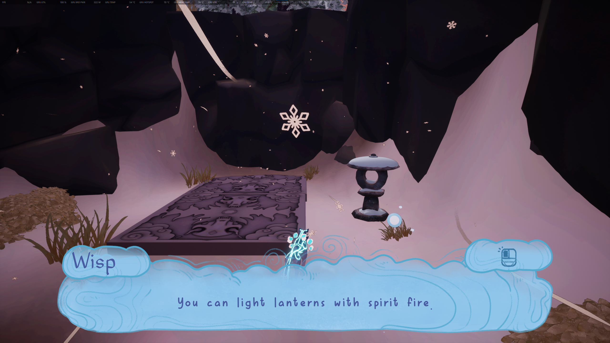
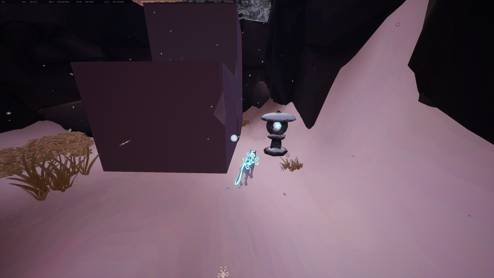
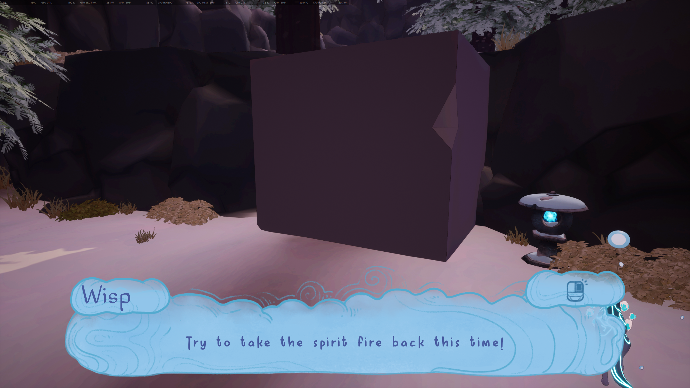
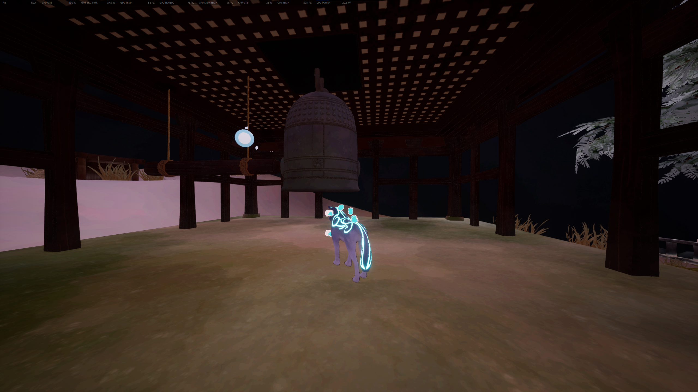
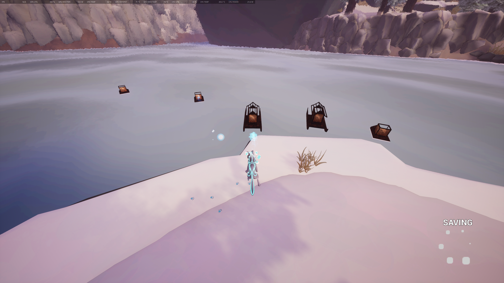
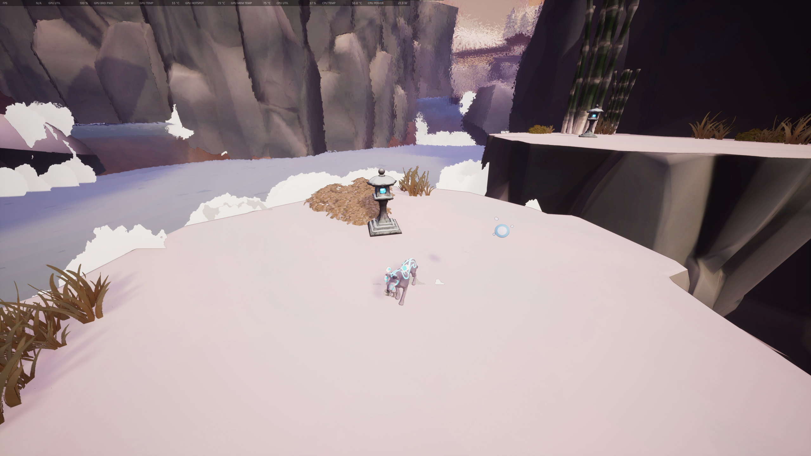
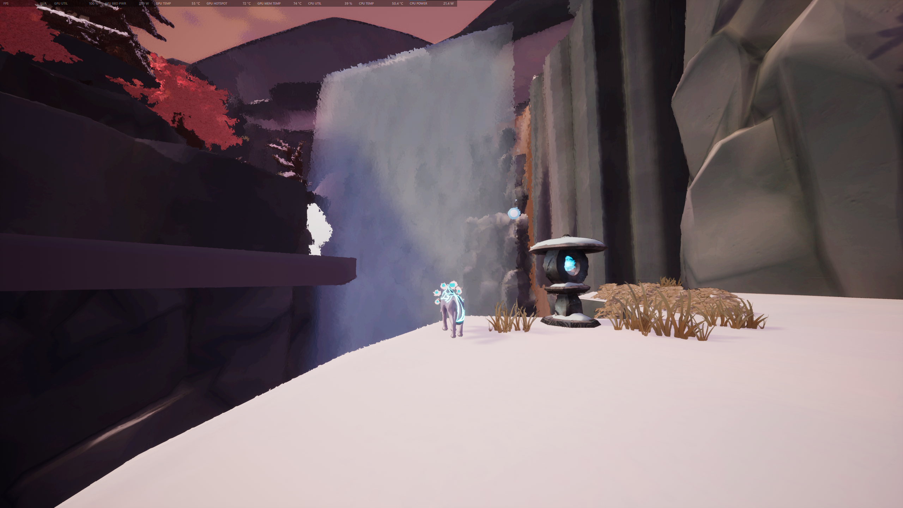
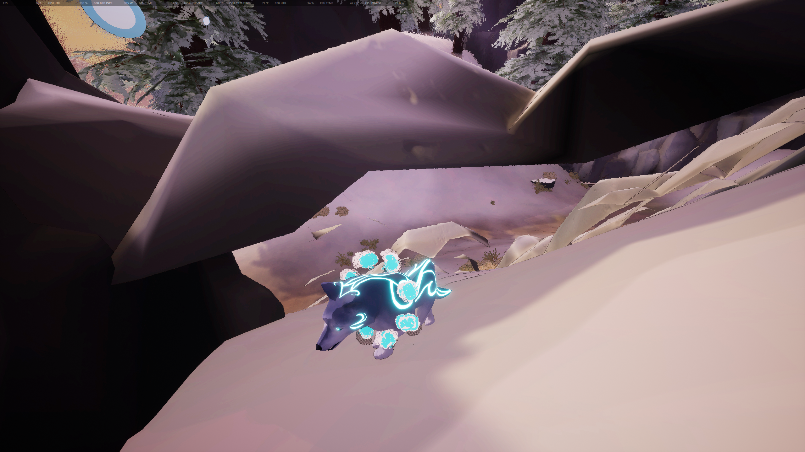
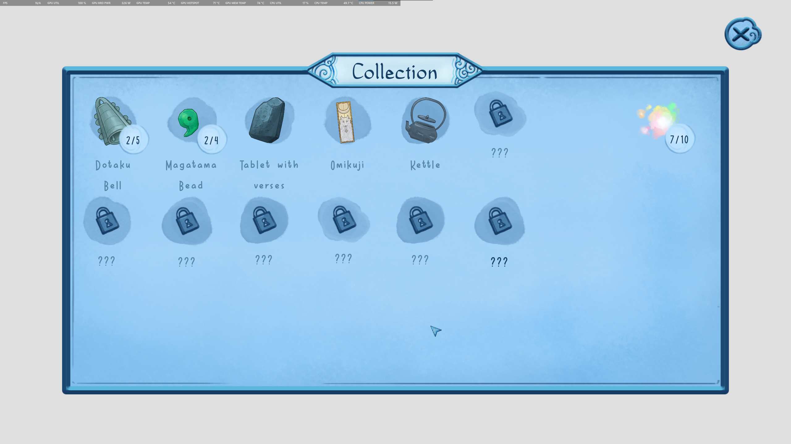

Game Review: Path of Kami (DEMO)
Platforms: Windows, Linux · Genre: Puzzle Platformer · Release: 09 Nov. 2022
Introduction
Path of Kami (DEMO) is a charming 3D puzzle platformer game set in a spirit world inspired by Japanese culture and folklore. You play as Kazeyo, the spirit of a wolf, and are guided by Wisp, a guardian spirit. In the DEMO version, your main goal is to obtain three spirit keys in order to continue on your journey through the spirit world.
I made a Kumu Network of things in the game that I think are notable/important, just as a quickstart guide for reading the rest of my review later on. You should be able to interact with the circles and drag them around for better readability.
The Spirit World

I want to begin by acknowledging the beautiful artstyle of this game. The Wisp is a cute little orb-like spirit that floats around Kazeyo as you wander throughout the world. Kazeyo's fur has elegant, flowing lines that glow a lovely shade of sky blue.
The terrain and models are rather simplistic up close, but that may be an artistic choice. The snow coating the ground is a simple blanket of white, and the rocks are mostly plain chunks of varying shades of gray, depending on the rock and lighting. The tree trunks are a plain brown, but the trees have a surprising amount of detail in the leaves — although the leaves of the pine trees are a bit inaccurate: they're rather rotund for leaves that should have been more needle-like.
The real draw of the artstyle is in the distance — a stunning blur effect is overlaid on top of the environment, making it feel as if you are looking at a stained glass artpiece. I often found myself simply pausing to admire the landscape laid out before me. If you love games with a memorable artstyle and well-made world, this game is for you.
Evergreen Sea
As you travel around the Evergreen Sea, the starting area for the game, you eventually come across a Spirit Lantern.
When you first approach it, Wisp tells you that you can ignite the lantern using your Spirit Fire, and the corresponding button for that action is shown in a little cloud on the top right corner of the dialogue box. The default button for a mouse is left click; for an Xbox controller, it is the X button. Using this skill makes Kazeyo let out a little bark.
Lighting up this lantern will then elevate the nearby platforms, allowing you to continue on your journey.

Down by the diverging river, you can find a colorful floating flame that replenishes your Spirit Fire. It emits a sound akin to a wind instrument, gently humming like the breeze. The conveniently-placed flame is in the midst of your first puzzle, where you must ignite three Spirit Lanterns.
As the introductory puzzle of the game, this one is quite easy. All three Spirit Lanterns are in plain sight, and your biggest hurdle is possibly falling into the water if you are a bit too careless. Falling into the water will teleport you back to the nearest checkpoint, which in this case is the nearby cliff, just past the first spirit lantern tutorial.
Each time you light a Spirit Lantern, you hear a noise in the direction of where the puzzle reward will spawn.

Once all three Spirit Lanterns are lit, you can add your first item to your collection: a Magatama Bead. It emits a rather jarring sound: dissonant whispers, unable to be understood, but very much present in your ears. The Magatama Bead serves no discernable purpose in the DEMO version, but may have more significance in the full game. For now, it is a shiny little trinket that we can add to our magical inventory of item-holding.
Now that the first puzzle is complete, we can move on to the next section of the game. But first, another tutorial! This time, Wisp tells you that you can take Spirit Fire back from lit Spirit Lanterns, and just like before, the corresponding button is shown in a little cloud on the top right corner of the dialogue box. The default button for a mouse is right click; for an Xbox controller, it is the X button.
Yokoro Village

As you enter the village for the first time, Wisp suddenly drags the camera away to focus on a Sacred Fountain in the vicinity, telling you to come investigate it. The Sacred Fountains function as checkpoints in this game. They fully replenish your Spirit Fire, and you will respawn in the last visited Sacred Fountain if you fall into non-Spirit-Fountain-water nearby.

Back to where Kazeyo was before the sudden dialogue pop-up, there is a floating bell just a few steps ahead. It emits a rather faint low-pitched chime-like noise, barely audible over the music. The bell appears to be slightly larger than Kazeyo's head.

Collecting the bell makes it magically shrink to fit in Kazeyo's mouth, which is the only real way for a wolf to pick things up. Kazeyo looks incredibly adorable with the bell, and it also muffles any sound that Kazeyo vocalizes.
The bell once again magically changes its size, this time growing much larger than Kazeyo's entire body, as it moves to its proper place: hanging from the ceiling, with a log to the side meant for tolling the bell.

If you stand around here, close to the log, you can use your interaction button — the same one used to light Spirit Lanterns — to toll the bell. As far as I have discovered, doing this serves no real purpose in the DEMO, other than to toll the bell. It may have more significance in the full game.
Now, the puzzle for this region is just a tad bit more challenging than in the Evergreen Sea. One of the Spirit Lanterns is in plain sight — you immediately see it when Wisp first whisks your camera away to look at the Sacred Fountain. The other two lanterns are located somewhere in the village, and one is mostly obscured by a house towards the edge.

Once all three Spirit Lanterns are lit, a Kettle will appear near the Sacred Fountain, next to the nearby Spirit Lantern. Another shiny thing to add to your shiny things collection!
Past a small bout of platforming across the river, you can find five small rafts on the shores of an island. These mini-rafts each have Spirit Lanterns that can be lit with Spirit Fire.
In the real world, this is part of a festival called Toro Nagashi, "floating lanterns", where mini-rafts carrying lit lanterns are set afloat on rivers to commemorate the souls of the dead.

Hopping back to Yokoro Village mainland, you can find your first Spirit Key of the game. As the first Spirit Key, it is incredibly easy to find — it is floating right next to the pedestal that it needs to be placed onto. Once that's done, the nearby gates will open, and you can then move on to the next region.
Yokoro Outskirts
Heading off into the Yokoro Outskirts, you come across yet another Spirit Lantern puzzle.

This one is a lot more difficult than the previous two, because now the Spirit Lanterns are scattered across an area with varying elevation levels. The first one is easy to spot, right on top of this cliff, but the rest are more hidden around the place.
In this picture, I specifically wanted to show off the Spirit Fire resource mechanic. As your Spirit Fire stock gets depleted, Kazeyo becomes more and more translucent. When you're down to just one charge of Spirit Fire, Kazeyo is essentially transparent, save for the still-glowing blue lines.
If you only have one charge of Spirit Fire left, the game does not allow you to use it. You need to replenish your charges of Spirit Fire, either at a Sacred Fountain, or by collecting one of many colorful floating flames.

Once all three Spirit Lanterns are lit, a Dotaku Bell appears on top of a nearby small cliff. Just like the other items in your collection so far, this serves no real purpose in the DEMO, but may be more significant in the full release. Another shiny thing for your shiny things stash!
For now, this is pretty much all you can do in the Yokoro Outskirts region. You must now move on and complete the next two regions, in whatever order is most convenient. For this review, I decided to pick the region closest in proximity to the Yokoro Outskirts.
Yokoro Cemetery
Further up the mountain, you come across Yokoro Cemetery.

You come across a completely dry Sacred Fountain. On the cliff beside the empty Sacred Fountain stands the first of three Spirit Lanterns for your next puzzle. This puzzle is around the same difficulty as, or even slightly easier than the Yokoro Outskirts puzzle.
Two of the lanterns are within view of each other, while the third one hides away by the riverside. Depending on how you trotted over to the Yokoro Cemetery, you may have seen it on the way.

Once all three Spirit Lanterns are lit, a giant floating blob of Spirit Water appears, and starts hovering around the pathway surrounding the cliff. Jumping up to touch the blob will collect it, and refill the previously-empty Sacred Fountain.

Moving on to the Yokoro Cemetery proper, you encounter two pedestals this time, flanking a giant Spirit Fox statue. On either side of this whole setup are two cliffs of equal elevation. The trinkets for each pedestal are on each cliff, and you must complete a modestly-challenging Spirit Lantern puzzle to reach them.
Once that's done, the Spirit Key spawns on top of the Spirit Fox statue's head, and you must jump up to grab it. Now, we can move on to the last major area of the DEMO.
Moonlight Falls
Approaching the peak of this mountain range, you come across a courtyard building with the next Spirit Key puzzle inside it. Past the building is a gorgeous landscape, bordered by waterfalls on the right, and a view overlooking the Yokoro regions on the left.

There is also another group of three Spirit Lanterns to light. This time, they are all in plain view, but separated by distance. The first one activates this floating platform, and you can then hop on to get to the next cliff, where you can find another two floating platforms, with their respective Spirit Lanterns nearby.
Below the first clifftop-building with one of two trinkets needed for the next Spirit Key, you can find another Spirit Lantern puzzle. The puzzle itself is not difficult — it's finding the puzzle that can be difficult. The puzzle location is almost entirely obscured by the first tall cliff nearby, and you can very easily fall into the water if you're not careful.
Once all three Spirit Lanterns are lit, an Omikuji appears next to the middle lantern. I accidentally collected it before taking this screenshot, but I will show what it looks like later, when I talk about the game mechanics.
In the real world, O-mikuji are essentially the Japanese version of a Chinese fortune cookie: people can receive (or buy) O-mikuji at Buddhist temples and Shinto Shrines, and they foretell varying levels of fortune or misfortune.
Now, you may be looking over at this giant waterfall and wondering: "Is there something behind the water?"

The answer is yes, there is indeed a hidden area behind the waterfall. To reach it, you must scale the cliffside, beside the second clifftop-building that holds the second trinket for the Spirit Key. In the alcove, there is a Tablet With Verses that I (once again) collected on accident before taking a screenshot.
Back to the courtyard now, there is another bell that you can place next to a suspended log. Again, this seems to serve no real purpose in the DEMO, and may have more significance in the full version, but it's always fun to toll the bell regardless. It makes a lovely, deep, resonating sound.
With the two statues now in place on their pedestals, you can collect the third and final Spirit Key of the DEMO. And now, you must trek back down the mountain to the Yokoro Outskirts.
Yokoro Outskirts(again)
The game pans the camera over to the stairs leading up to this clifftop, where a wooden carriage awaits.

When you enter the carriage, the side door closes for Kazeyo's safety, and it starts to move along the ropes connecting this cliff to another cliff across the valley below. Kazeyo patiently (or impatiently, if you decide to frantically move around) waits inside the carriage, before the screen fades to white.
Congratulations! you've reached the end of the DEMO, and the devs show their gratitude for playing their DEMO.
Some Thoughts
There were a couple issues I faced while playing the game, but that's because of how I play games. Most players should not encounter some of the more game-breaking issues.
The path to the Evergreen Sea is flanked by rocky, snowy elevation on either side. On the left, there is a hole under some of the rocks, allowing me to get under the intended terrain.
It is interesting to note that the snowy part of the terrain goes all the way to the floor, and the rocky bits are overlaid on top. I thought the snowy part begins just where the rocks end, and I fully expected to fall out of the map. Luckily, getting out of this only required a simple jump, so I was not stuck between a rock and a hard place.

Another thing that is not really an issue is the fact that most of the Spirit Lantern platforms can simply be skipped. The first one that teaches you how to light a lantern can be skipped by scaling the cliffside to get onto the cliff top, and then you can just move on to the first Spirit Lantern puzzle down by the river, like nothing ever happened.
Further along, the Spirit Lantern that teaches you how to take Spirit Fire back from a Spirit Lantern can also be skipped, by climbing the nearby cliffside (again). The ledge is much lower than the first one, so this one takes even less effort and less time to skip.

However, the devs did think of at least one level skip, and that's at the mountainside in the image above.
If there was no invisible wall right here where Kazeyo stands, I would have found a way to skip right over to Yokoro Cemetery. This is not a complaint, but I do find it mildly hilarious that they did not think of the other skips in this DEMO.
Other than that, I did encounter a couple moments (or areas?) in the game where Kazeyo would randomly get frozen in place. I could still look around and use Spirit Fire, but the game would not let me move at all. To fix this, I just had to quit to the main menu and reload the latest savepoint, which usually did not take me too far back.
The collection mechanic was fun, even though they served no real purpose in the DEMO. Although, even if they serve no gameplay purpose, they still served lore purposes, similar to the tolling bells that Kazeyo finds throughout the Spirit World.
The giant bells are known as Bonsyou, found in Buddhist religious sites. In Japan, the tolling of the Bonsyou served as a marker of time. The tolling of the Bonsyou is called Ake Mutsutsu, "six times in the morning", and Kure Mutsutsu, "six times in the evening", at around 6am and 6pm, respectively.
At the very end of the calendar year, 31 December, there is an event called Zyoya no Kane, where people visit the Buddhist temples to pray for good fortune in the upcoming year. During this event, the monk must hit the Bonsyou 108 times.
This number is chosen because in Buddhism, it is believed that people have 108 earthly desires; therefore, hitting the Bonsyou 108 times will repel those desires, allowing the soul to be purified and able to accept good fortune for the new year.
Conclusion
This was relatively short, nothing out of the ordinary for a DEMO, but still memorable and enjoyable for me.
The movement can be a little bit janky, and using Spirit Fire has a lot of endlag — meaning, there is a noticeable pause before and after using the ability.
The sound design is also in need of some polishing. The background music is not constant: there are stretches of silence when the track ends before the music starts playing again, but I am unsure if this is intentional. Additionally, the music at default, or even at half volume, can be a little too loud. This makes certain sounds difficult to hear, such as the droning noise emitted by the trinkets/statues used to reveal the Spirit Keys, and the Bonsyou that you can pick up around the map.
The sounds emitted by all of the objects you can pick up are also quite unhelpful. They are not directional — they sound like they're coming from inside your head, and the only helpful indication they can give is the volume level. The sound gets louder as you get closer to the object, but it will not help you pinpoint its direction.
The dissonant whispers emitted by collectibles is also in need of some fixing. The sound plays louder on the right ear, regardless of where the collectible is located relative to Kazeyo.
Other than that, I enjoyed the DEMO overall, and I am now interested in playing the full version.
In the full version, I hope they would make the movement overall smoother, and polish up the action on giving and taking Spirit Fire. I also hope they would fix some minor "popping" issues with the environment, where the actual shape and texture of the terrain suddenly appears and replaces the lower-detail distant placeholder.
I also hope that they fix the performance issues I had with the game. My computer is nothing weak, my CPU is a Ryzen 7 9800X3D, and my GPU is a Radeon 7900XTX, but the game had my gpu at 100% utilization. This may be because the entire game map is loaded at all times, just to make the distant stained glass effect work, but that is incredibly taxing on the GPU for no reason. I think they could instead unload the parts of the map beyond where the stained glass effect begins, and replace it with some sort of panoramic/moving image that roughly mimics what the landscape looks like. This does not need to be detailed at all, because the stained glass effect mostly obscures the details anyway.
Rating
Overall I would rate the demo a seven out of ten. Good premise, engaging worldbuilding and lore with real-life cultural inspiration, and a loveable protagonist.
The puzzle design is decent, and starts off incredibly easy in the Evergreen Sea, and slowly ramps up in difficulty as you move through the game, without getting too difficult.
Overall, I think the puzzle aspect of the game is fairly casual, which makes this game a good pick for relaxation. De-stress, solve a few puzzles, and enjoy the beautiful landscape the devs have crafted for you to explore. And enjoy Kazeyo's cute wolf noises.